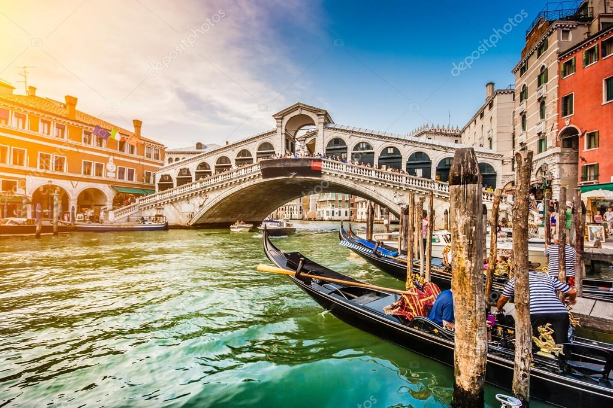

Wat moet je zien en doen in Venetië?
Dit zijn 5 plekken die je echt moet bekijken op basis van veel mensen die daar zijn geweest is dit de top 5 geworden
1. San Marcoplein
Het San Marcoplein is echt een plek die je moet bezoeken in Venetië, helaas kan het er wel heel druk zijn. Aan dit belangrijkste plein van de stad staan verschillende gebouwen die tot de mooiste bezienswaardigheden van Venetië behoren. De favorieten zijn Piazza San Marco en San Marcobasiliek (let vooral op het vele mozaïek) en de 98 meter hoge Campanile. Vanuit deze toren heb je een prachtig uitzicht over Venetië. Vanwege de drukte moet je vaak wel even geduld hebben om naar boven te kunnen.
2. Canal Grande
Veel foto’s die in Venetië zijn gemaakt worden genomen zijn op de Canal Grande gemaakt. Dit is het grootste en belangrijkste kanaal van Venetië. Hier varen de karakteristieke gondels. Als je met de waterbus over de Canal Grande vaart dan heb je een prachtig zicht op de vele paleizen die hier langs het water staan, op de gondels en op de Rialtobrug die je toch wel als één van de belangrijkste iconen van Venetië mag beschouwen. Een bezoek aan deze brug moet je ook absoluut niet overslaan als je in Venetië bent. Vanaf de brug heb je ook een prachtig uitzicht over het mooiste deel van de Canal Grande.
3. Dogepaleis
Het middeleeuwse dogepaleis (Palazzo Ducale) is één van de fraaiste bouwwerken van Venetië. In dit paleis woonde vroeger de doge. Dat was de leider van de Republiek Venetië, dat vroeger tot de machtigste staten van Europa behoorde. Tegen betaling (en vaak ook met de nodige portie geduld) kun je de fraaie vertrekken van het Dogepaleis bezoeken. Vanaf het paleis heb je ook een fraai uitzicht over de lagune. Aan de achterkant van het paleis vind je de Brug der Zuchten dat het paleis met de gevangenis verbindt.
4. Teatro La Fenice
Je hoeft geen operaliefhebber te zijn om het klassieke operatheater La Fenice te bezoeken. Overdag kun je, tegen betaling uiteraard, een kijkje nemen in het begin deze eeuw gereconstrueerde theater. Als je van opera houdt dan behoort dit theater tot de mooiere plekken in Europa om van een goede operavoorstelling te genieten. Voor een bezoek overdag hoef je vooraf geen kaartjes te kopen. Voor de voorstellingen is reserveren wel aan te raden.
5. Lido of Murano
Venetië bestaat uit meerdere eilanden. Als je er de tijd voor hebt dan zou ik zeker overwegen om tenminste één van die eilanden te bezoeken.Het langgerekte lido is vooral in de zomermaanden de moeite waard als het zomers weer is. De reden hiervoor is dat Lido vooral een strandbestemming is. Ja, wat veel mensen niet weten is dat Venetië kilometers aan zandstrand telt.Als je naar Venetië reist is Murano ook een mooie plek om te bezoeken. Hier zijn de glasblazers actief die het prachtige Muranoglas maken dat je in de winkels van Venetië aantreft. als ik naar Venetië zou gaan dan zou ik ook zeker het glasmuseum bezoeken. Zowel Murano als Lido zijn met de vaparetto te bereiken.